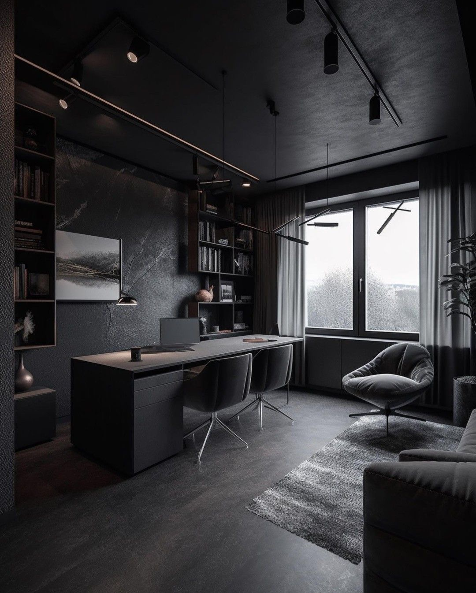
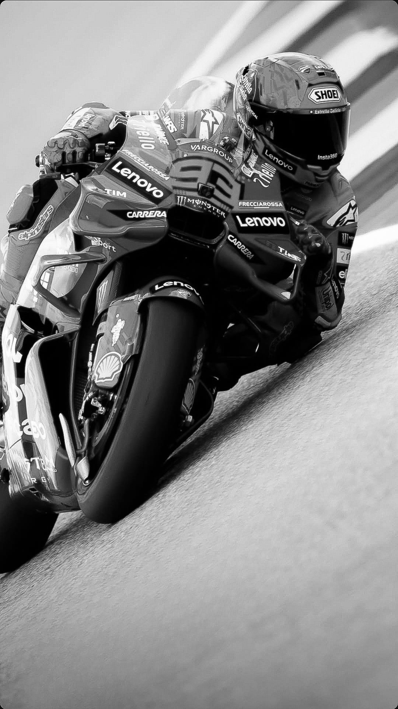
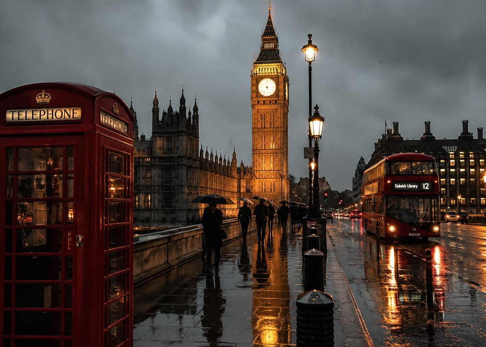
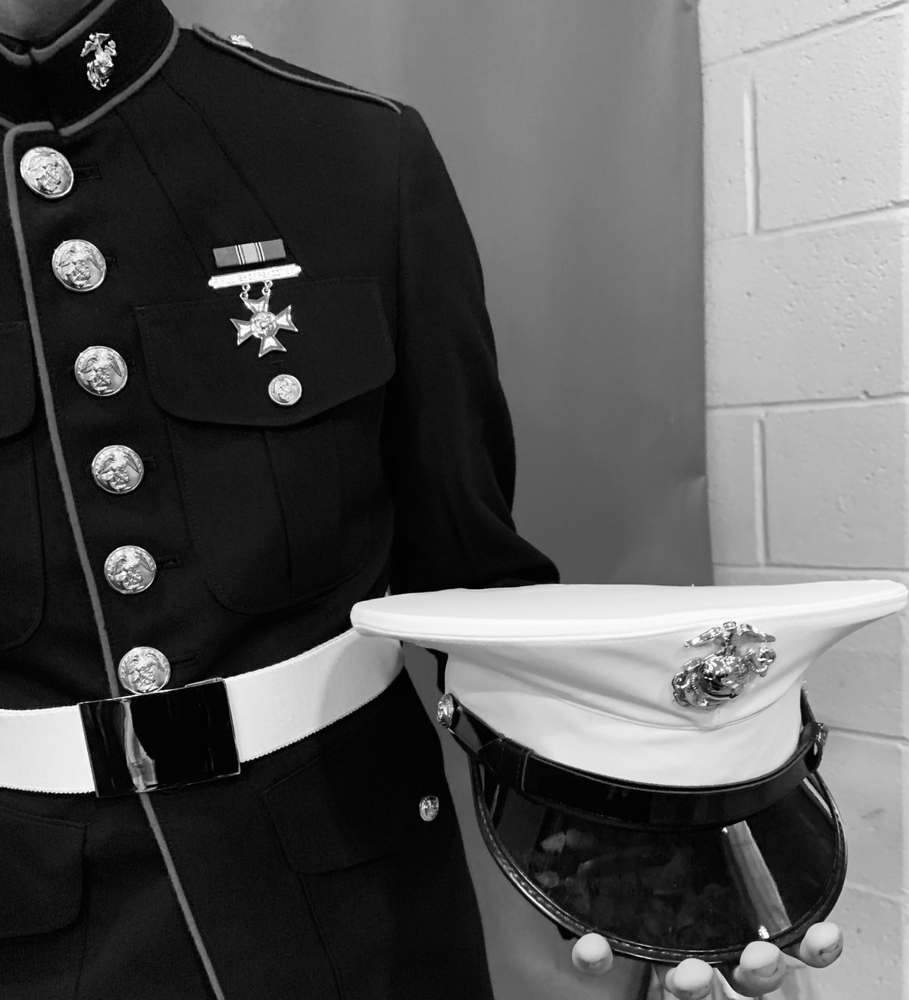
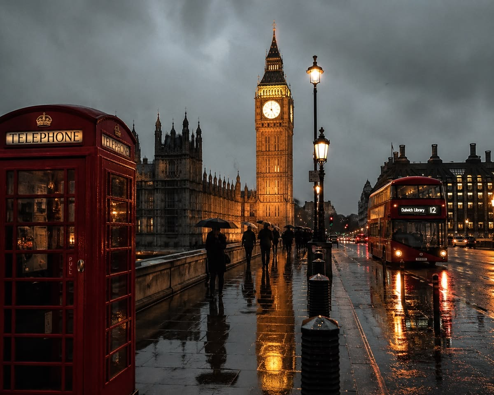

01 — AVIATION
01 / PORTRAIT
LONDON · 2026
PERSONAL PROFILE
Gregor
Verlaine
Gregor Verlaine mantiene una relación deliberadamente discreta con el mundo que lo rodea. De temperamento reservado y observador, encuentra particular afinidad en aquello que exige precisión, paciencia y atención al detalle. La música, la literatura y la composición visual ocupan buena parte de su esfera personal, mientras que su interés por la gastronomía y la arquitectura responde a una curiosidad más amplia por las formas en que el ser humano construye, transforma y habita sus espacios.
Fuera del ámbito profesional, prefiere la quietud al protagonismo y la observación a la exposición. No parece existir en él una necesidad particular de ser comprendido de inmediato; algunas cosas, después de todo, adquieren mayor claridad cuando se les concede suficiente distancia.
IDENTITY28 · BRITISH · LONDON
SERVICEROYAL NAVY · FLEET AIR ARM
RANK / SPECIALTYLIEUTENANT · NAVAL FAST-JET PILOT
CALLSIGNSTEPPENWOLF
02 / PERSONAL INDEX
01AVIATION
02LITERATURE
03MUSIC
04LANGUAGES
05VISUALS
06CUISINE
03 / LENGUAJE HÍBRIDO
LOBO
ESTEPARIO
04 / ARCHIVE
Selected fragments.

02 — LITERATURE
Reading / Personal Library

03 — LONDON
Residence / Urban Archive

04 — MUSIC
Piano / Personal Archive

05 — ARCHIVE
Motorcycle Racing / Former Era

06 — ROYAL NAVY
Service / Personal Record
Maeva
Journalist“Durante prácticamente toda su juventud, el motociclismo constituyó el eje de su vida. A los veintiún años anunció su retiro sin que mediara accidente, controversia o conflicto alguno; sencillamente, había llegado el momento de clausurar aquella etapa. El interés que desde temprana edad había manifestado por la vida militar encontró entonces una nueva dirección. Los siete años posteriores transcurrieron deliberadamente alejados del escrutinio público.”